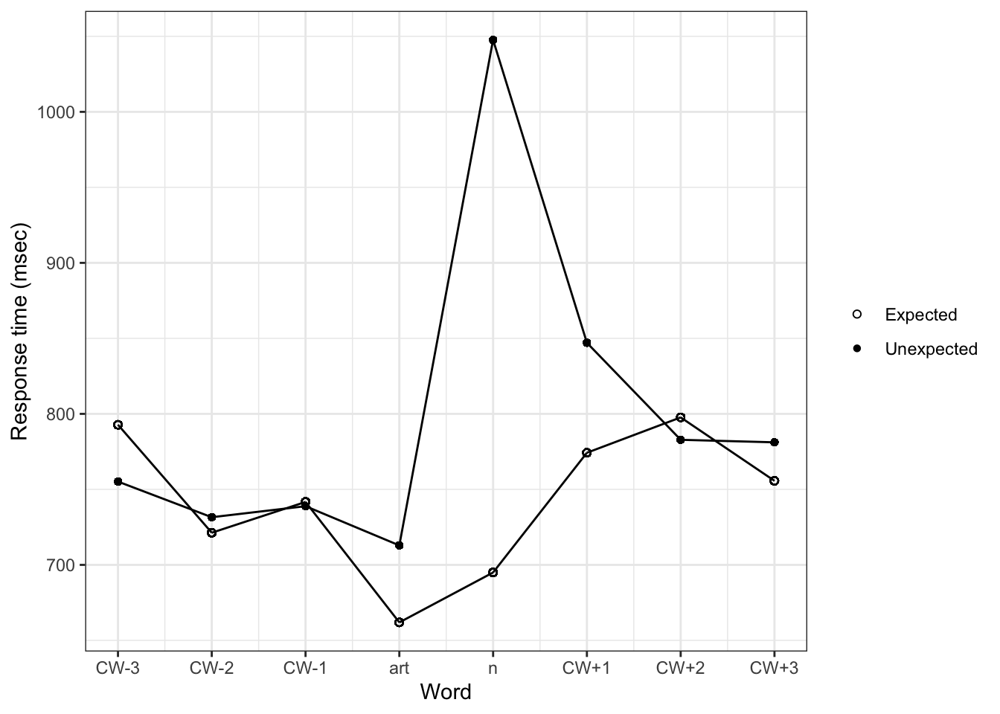

| Variable | Information |
|---|---|
| Results index | Index |
| Time of response | Time |
| Derived from the IP address of each participant | Hash |
| Logged in as experiment owner? (if known) | Owner |
| Controller name | Controller |
| Sentence number | Item |
| Element number | Element |
| experimenter's name | exp |
| whether the item was expected or unexpected | expect |
| position in the sentence relative to the target word | position |
| the index of the target word | pos |
| the question being asked of the participant | FieldName |
| the answer to the question in FieldName | Value |
| index of word positions within sentence | WordNum |
| Correct word | Word |
| Alternative word | Alt |
| Word on (0=left | WordOn |
| NA | 1=right) |
| Whether or not the correct word was chosen | CorrWord |
| Reading time to first answer | RT |
| Sentence | Sent |
| Total time to correct answer | TotalTime |
| Question (NULL if none). | Question |
| Answer | Resp |
| Whether or not answer was correct (NULL if N/A) | Acc |
| Time taken to answer | RespRT |
My Homework 5
This study tests the extent of prediction in sentence processing. It shows that participants given a maze sentence processing task, choosing to continue the sentence with a correct word or a distractor word, react more slowly both to unexpected correct words and to unexpected correct articles. For example, in the sentence “Orlando thought that glass was a solid but when he held it under the Bunsen burner it melted and turned into an element that could be sculpted.”, the unexpected occurrence of “an element” rather than (presumably) “a liquid” resulted in longer processing times both of “element” and “an”.
The data collected during the experiment were recorded as follows:
There are 38 participants in this study, between the ages of 18 and 71. After excluding responses where participants did not select the correct word, 64599 rows of data remained.
| Age statistics | |||
|---|---|---|---|
| Mean | Min | Max | Standard Deviation |
| 34.87179 | 18 | 71 | 14.08093 |
Examining the three content words on either side of the article and noun pair, there is a clear distinction between expected and unexpected articles and nouns.

| rgnfx | meanrt |
|---|---|
| -3 | 792.7837 |
| -2 | 721.2737 |
| -1 | 741.6869 |
| 0 | 661.8892 |
| 1 | 694.9666 |
| 2 | 774.2437 |
| 3 | 797.6633 |
| 4 | 755.6613 |
| rgnfx | meanrt |
|---|---|
| -3 | 755.1636 |
| -2 | 731.5532 |
| -1 | 738.8717 |
| 0 | 712.8816 |
| 1 | 1047.5851 |
| 2 | 847.0805 |
| 3 | 782.8374 |
| 4 | 781.1567 |
As shown in the data illustrated above, response times were longest at the unexpected noun, and shortest at the expected noun and article. This suggests that participants were actively predicting both articles and nouns.